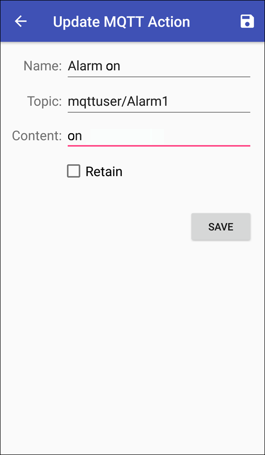

In der App lassen sich auch Aktionen definieren, welche an bestimmte Topics eine Nachricht senden. Denkbar wäre beispielsweise, dass sich darüber die Alarmanlage in einem entfernten Objekt per App ein- bzw. ausschalten lässt.
Die Option „Retain“ erlaubt das Vorhalten von Benachrichtigungen. Details finden Sie in der Dokumentation für den MQTT-Server.

Das Topic, für das Sie eine Aktion definieren, muss bereits angelegt sein. Im obigen Beispiel wurde das Topic „mqttuser/Alarm1“ bereits angelegt. Im Fenster „MQTT Actions“ sollte nun die von Ihnen angelegte Aktion zu sehen sein.